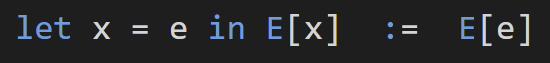

Generalizing Let Expressions
Thomas Porter, April 30, 2022
The lambda calculus consists of two basic operations; function abstraction and function application. I prefer to write function abstraction using a simple arrow notation. My notation is on the left, and the traditional notation is on the right.
And I prefer to write function application using the pipeline operator, represented as a little triangle.
The semantics of the let expression, ubiquitous in functional programming, may be simply expressed as:
That is, within the body of the let expression (here E[x]), the symbol x evaluates to e. We may also understand the semantics as:
Which will elucidate the generalizations. When programming, I have been finding myself writing expressions of the form:
Where E may be rather complicated, and in fact may contain nested expressions of the form above. Map and bind are ubiquitous operators which, like application, take as arguments a value, and a funtion, and perform some kind of alternative to direct function application. Maps are associated with all functors, and bind is associated with monads, which represent a special kind of functor.
But defining my own function for such a narrow use felt pretty clunky. I realized that let expressions solve exactly this problem, but for the application operator, rather than map or bind. Let expressions allow you to implicitly chain together function abstractions, which are immediately applied to some argument. This suggests the following constructs.
I found the Jane Street indeed has an implementation of this kind of thing, and adjacent constructs. These feel nice, but all told, not too remarkable. The thing that really pleases me is a notation I'd like to adopt for these constructs. First, I'd like a notation for map and bind that suggests their ubiquity and analogy with plain function application.
A notation I like for let expressions is the backwards arrow for assignment... and let expressions are for application... and arrows can be made to incorporate the little triangle ... which leads me to this:
How does this notation look in practice? Here are two simple examples.
Inreasing every element of a list by two. Assume l is a list of numbers.

Perform an operation on two options/maybes if both succeed. Assume e1 and e2 are both options/maybes of some type T, and that f takes in a pair of Ts.
This seems pretty reasonable to me! What do you think?